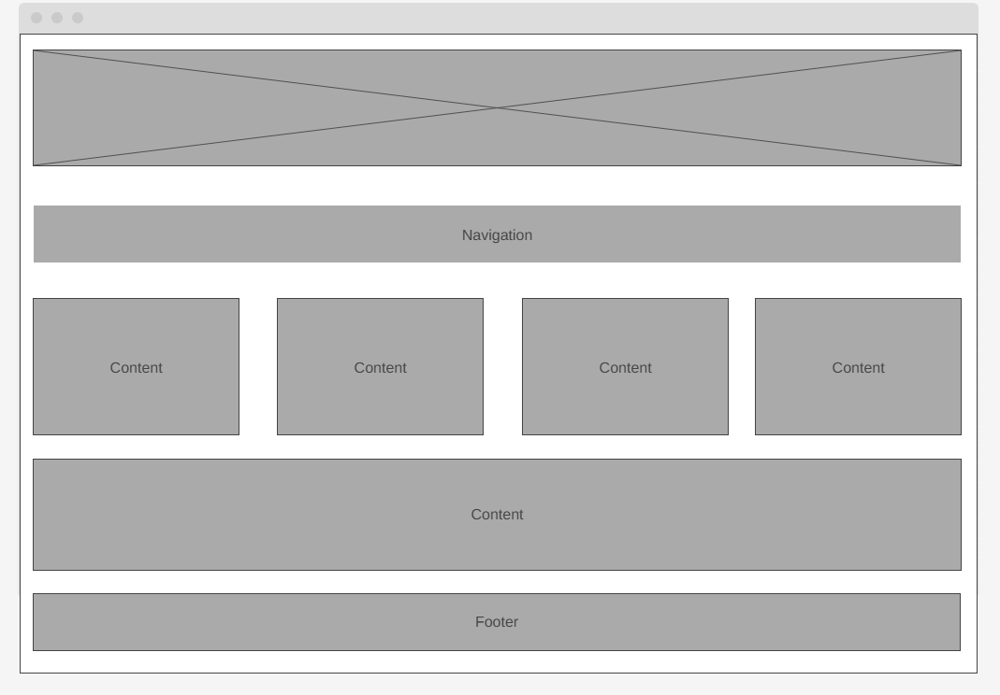
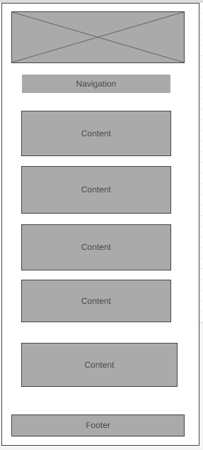

Site Name
Blantyre Chamber of Commerce
Purpose
The purpose of the Blantyre Chamber of Commerce is to support local businesses by providing resources, networking opportunities, and advocacy. It aims to foster a thriving economic environment through member engagement, events, and community involvement.
Events
- Annual Business Expo: A large event where businesses showcase their products and services to the community.
- Monthly Networking Luncheon: Regular gatherings for members to network and build relationships.
- Workshops and Seminars: Educational events providing valuable insights and skills for business success.
Membership
Membership in the Chamber of Commerce offers numerous benefits including networking events, business resources, advocacy, and increased visibility through marketing. Membership levels include Basic, Premium, and Corporate, each offering a range of exclusive advantages tailored to meet the needs of different businesses.
How to Join
To join the Chamber of Commerce, follow these steps:
- Visit the membership page on our website.
- Choose the membership level that best suits your business needs.
- Fill out the online application form with your business information.
- Submit the application form and pay the membership fee online.
- Receive a confirmation email and start enjoying your membership benefits.
Color Scheme
The color scheme for the Chamber of Commerce website includes:
- Primary Color: #0056b3 (Blue)
- Secondary Color: #004a99 (Dark Blue)
- Accent Color: #f4f4f4 (Light Gray)
- Text Color: #333333 (Dark Gray)

Typography
The typography for the website will use the Arial, sans-serif font family. This font is clean, professional, and widely supported across different devices and browsers.
Wireframe
Web View
Mobile View
